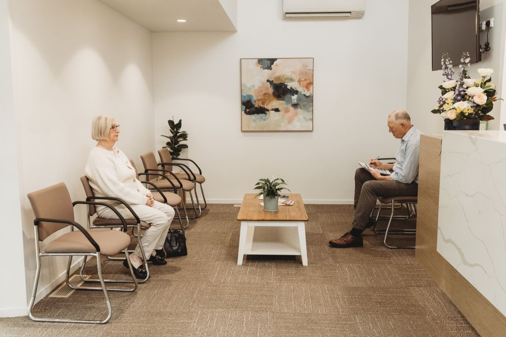
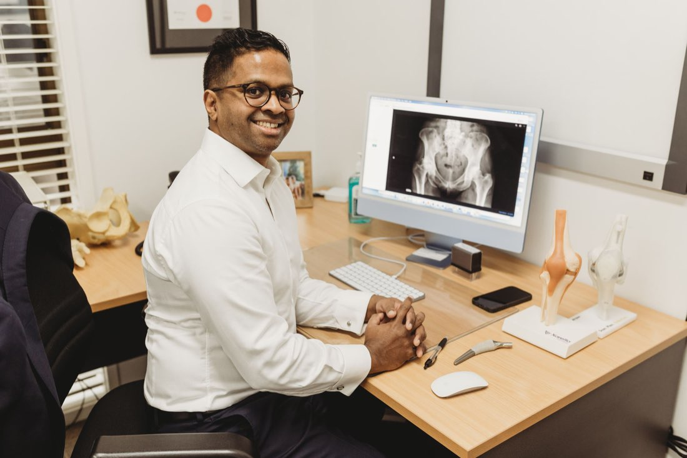
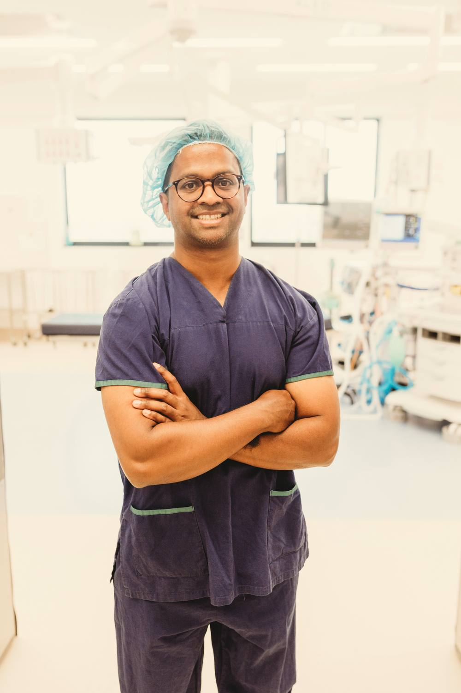
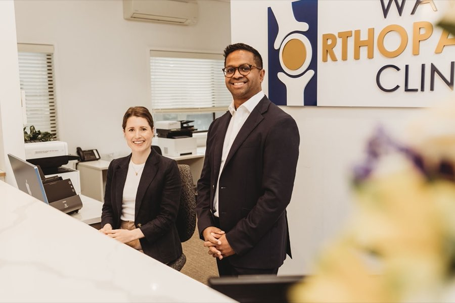

Dr Ravi Dissanayake
Dr Ravi Dissanayake is an Australian fellowship-trained orthopaedic surgeon, specialising in robotic assisted hip and knee replacement, revision hip and knee replacement, sports injuries (shoulder and knee), and trauma surgery.
Fellowship-trained orthopaedic surgeon
Dr Ravi Dissanayake is an Australian fellowship-trained orthopaedic surgeon, specialising in robotic assisted hip and knee replacement, revision hip and knee replacement, sports injuries (shoulder and knee), and trauma surgery.
Ravi consults across south-east Melbourne and regional Victoria and operates in both public and private hospital settings, giving patients access to care close to home whether they're near Mount Waverley, Berwick, Warragul, Wonthaggi or Phillip Island.
- Fellowship-trained orthopaedic surgeon
- Robotic assisted joint replacement
- Public and private hospital practice
- Consulting across metro and regional Victoria


Hands-on surgical care
Ravi operates at Waverley Private Hospital and St John of God Hospital, Berwick, performing robotic assisted and revision hip and knee replacement, along with trauma and sports injury surgery of the shoulder and knee.

Friendly staff
Ravi's staff can help with bookings, referrals and any questions about your visit.
Get in TouchAll patients welcome
Patients with private health insurance, without private cover, and WorkCover or TAC patients are welcome.